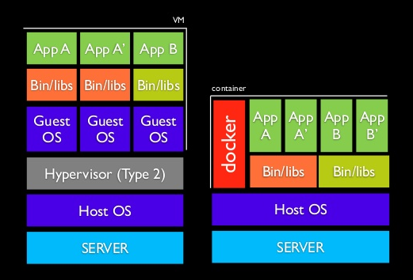
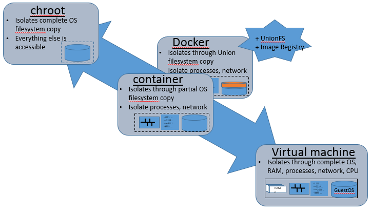
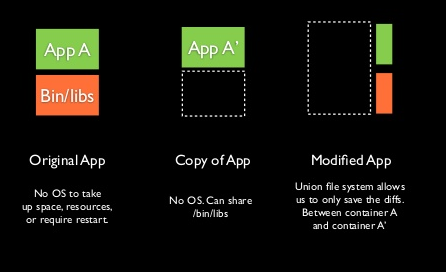
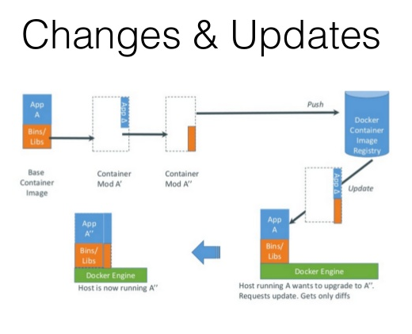
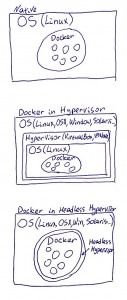
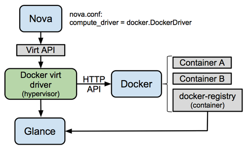
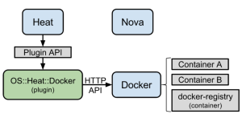

Lightweight Virtualization with Docker
Grenoble Python User Group - http://mjbright.github.io/Pygre
Michael Bright, 27th March 2014.
Presenter Notes
Overview
Presenter Notes
Overview
- What is Docker?
- Containers versus VMs
- What use is it?
- The image registry
- Installing and Using Docker
- Docker commands
- Building Images
- REST API
- Connecting containers
- OpenStack and Docker
- ... and finally
- Demo
Presenter Notes
What is Docker?
Presenter Notes
What is Docker?
Docker is a lightweight container mechanism, originally developed on LXC (Linux Containers) to isolate processes from each other.
It is lightweight because the use of a union filesystem allows only filesystem differences to be stored.
Presenter Notes
What is a container?
A container isolates a set of processes on a host machine limiting what can be done by those processes and to them. Let''s compare with a VM:

Presenter Notes
Containers vs chroot/VMs

Presenter Notes
So what is Docker?
Docker provides the following benefits
+ Lightweight virtualization - no OS emulation
* Low memory
* Low disk footprint
* Fast spinup times compared to VMs
+ A union filesystem allowing incremental 'images'
+ An image registry
- private or public <https://index.docker.io/>
- accessible from command-line and REST APIs
- Hierarchical images via repo
What does Docker bring that Container's don't?
- Image registry
- Union filesystem
- REST api
Presenter Notes
Union Filesystem (Currently 'aufs')


Presenter Notes
The image registry

Presenter Notes
What is Docker used for?
Presenter Notes
What is Docker used for?
Shipping containers from port to port !!
Presenter Notes
What is Docker used for?
In the same way that virtual machines can be used to provide isolation and allow cloud functionality to spin up machines, container systems such as Docker can do this with much lighter processes as we do not emulate the host OS.
NOTE: Docker won''t be production ready until its v1.0 release (May? 2014) ... but it is in production already ...
Commercial PaaS: Platform as a Service
Docker is already being integrated into several PaaS:
- RedHat''s OpenShift
- ActiveState''s Stackato
- soon CloudFoundry (alongside Warden)
Presenter Notes
What is Docker used for? - 2
Use Case Examples Link
-
Build your own PaaS Dokku - Docker powered mini-Heroku.
<http://bit.ly/191Tgsx> -
Web Based Environment for Instruction JiffyLab - web based environment for the instruction, or lightweight use of, Python and UNIX shell http://bit.ly/12oaj2K
-
Easy Application Deployment Deploy Java Apps With Docker = Awesome http://bit.ly/11BCvvu
-
Running Drupal on Docker
http://bit.ly/15MJS6B -
Installing Redis on Docker
http://bit.ly/16EWOKh -
Create Secure Sandboxes Docker makes creating secure sandboxes easier than ever
http://bit.ly/13mZGJH -
Create your own SaaS Memcached as a Service http://bit.ly/11nL8vh
-
Automated Application Deployment Push-button Deployment with Docker http://bit.ly/1bTKZTo
-
Continuous Integration and Deployment Next Generation Continuous Integration & Deployment with dotClouds Docker and Strider http://bit.ly/ZwTfoy
-
Lightweight Desktop Virtualization Docker Desktop: Your Desktop Over SSH Running Inside Of A Docker Container
Presenter Notes
OpenSource Projects - 1
List courtesy of CenturyLink Labs article, Mar 2014
-
OpenSource PaaS
-
DOCKER ORCHESTRATION
Presenter Notes
OpenSource Projects - 2
-
CI/CD
- Drone 2,516*, 133 forks, full Docker-based CI/CD pipeline
-
UI
-
OTHER
- [Docker on OpenStack] (http://github.com/dotcloud/openstack-docker) 204*, 17 forks, in Havana/out IceHouse
Presenter Notes
Docker Startups
List courtesy of CenturyLink Labs article, Feb 2014
- StackDock - Docker hosting on blazing fast dedicated infrastructure
- Orchard - Host your Docker containers in the cloud
- Tutum - IaaS-like control, PaaS-like speed
- Quay.io - PRIVATE DOCKER REGISTRY - Secure hosting for private Docker repositories
- Flynn - DOCKER ORCHESTRATION - The product that ops provides to developers
- CoreOS - Linux for Massive Server Deployments
- Serf - Decentralized service discovery and orchestration that is lightweight, highly available, and fault tolerant
- Shippable - CI/CD
Presenter Notes
Docker History
A very fast moving project with monthly .1 releases.
Only 1 year old, announced on 20 Mar 2013.
- Originally in Python -> now all in Go (Google''s system language)
- v0.7: Support for more linux distributions
- v0.8: Emphasis on quality, initial OSX support(boot2docker)
- v0.9: Execution Drivers/Libcontainer => allow container mechanisms (LXC, OpenVZ, qemu-kvm) on different OSes
- v0.9.1: bug fixes
- v0.10: First Release Candidate (Apr 2014)
- v1.0: Production ready!!
See the releases in the blog http://blog.docker.io/category/docker-releases/
Presenter Notes
Docker History - Version 0.9

Presenter Notes
Docker History - Version 1.0
The goals for Docker 1.0 are: + production quality
-
first class support of all major operating systems
-
a shrunken core and a stable plug in architecture
-
well documented
-
able to be commercially supported by Docker and our partners
-
Docker able to offer long term support
Presenter Notes
Installing and Using Docker
Presenter Notes
Installing Docker
Docker can be installed on several platforms, in several ways.
Natively it can be installed on the latest Ubuntu releases (13.04, 13,10 and 12.04 LTS) as well as some other Linuxes. Runs very stable.
Ports are available for Fedora, and some ARM-based distributions.
Non-native installations can be achieved via a VM, e.g. via:
- boot2docker on OSX, Windows
- vagrant-docker
- CoreOS
- DevStack (Havana)
See the installation page of the 'getting started page' https://www.docker.io/gettingstarted/#h_installation
Presenter Notes
Installing Docker - boot2docker
Will we get native Docker on all platforms, or Docker via Headless Hypervisors?

Presenter Notes
Using Docker
See the tutorials on the 'getting started page' https://www.docker.io/gettingstarted/
See the command-line client pages http://docs.docker.io/en/v0.5.3/commandline/command
Presenter Notes
Docker commands [1] - images
$ docker images # List local images
REPOSITORY TAG IMAGE ID CREATED VIRTUAL SIZE
my/ping latest f492632bbd55 11 hours ago 139.7 MB
wpress latest 93a82573c321 20 hours ago 680 MB
ubuntu 12.04 8dbd9e392a96 11 months ago 128 MB
base ubuntu-12.10 b750fe79269d 12 months ago 175.3 MB
$ docker history my/ping
IMAGE CREATED CREATED BY SIZE
f492632bbd55 2 days ago /bin/sh -c #(nop) ENTRYPOINT [ping] 0 B
92993f57601d 2 days ago /bin/sh -c apt-get install ping 11.66 MB
8dbd9e392a96 11 months ago 128 MB
$ docker rmi my/junk # Removing an image (or ID?)
Presenter Notes
Docker commands [2] - containers
# Run the base image and print Hello World:
# image --> containers
$ time docker run -i -t base /bin/echo "Hello World"
Hello World
real 0m0.690s # model name: Intel(R) Atom(TM) CPU 230 @ 1.60GHz
$ docker ps -a # Show all containers
CONTAINER ID IMAGE COMMAND CREATED STATUS PORTS NAMES
9d6d3c8a9a18 base /bin/echo Hello Worl 5 mins ago Exit 0 thirsty_hawking
Presenter Notes
Docker commands [3] - containers
# Run the base image as a daemon:
$ docker run --name DAEMON1 -d base bash -c 'while true; do date; sleep 1;done'
1e616ddb8f265063efa2abc8e2f7c728c122ccaadfa179dbe698540ff02ea75c
$ docker ps # Show running containers only
CONTAINER ID IMAGE COMMAND CREATED STATUS PORTS NAMES
1e616ddb8f26 base bash -c while true; 5 secs ago Up 4 secs DAEMON1
Presenter Notes
Docker commands [4] - processes
# Attach to container to see stderr/stdout:
$ docker attach 1e616ddb8f26
Sun Mar 23 19:22:58 UTC 2014
Sun Mar 23 19:22:59 UTC 2014
# Output of pstree with docker v0.9 (no LXC):
$ pstree -ap 8324
docker,8324 -d
|-bash,17034 -c while true; do date; sleep 1;done
| `-sleep,20237 1
|-{docker},8325
|-{docker},8326
|-{docker},8327
|-{docker},8328
|-{docker},8329
|-{docker},8332
|-{docker},8333
|-{docker},8365
|-{docker},30009
|-{docker},17035
|-{docker},18231
`-{docker},18610
Presenter Notes
Docker commands [5] - start/stop/rm
$ docker ps -q # List ids of running containers
$ docker ps -q -a # List ids of all containers (running or exited)
$ docker ps -q -a --no-trunc # List long-ids of all containers
$ docker stop $(docker ps -q) # Stop all runnning containers
$ docker rm $(docker ps -a -q) # Remove all stopped containers
# Stop tries stop gracefully, then kill - but some problems with kill
$ docker kill $(docker ps -q) # Kill all runnning containers
Presenter Notes
Docker commands [6] - registry
Search for images on http://index.docker.io
$ docker search mjbright/
NAME DESCRIPTION STARS OFFICIAL TRUSTED
mjbright/test 0
mjbright/ping 0
$ docker search -s 1 -t rails
NAME DESCRIPTION STARS OFFICIAL TRUSTED
lgsd/docker-rails 2 [OK]
studiomelipone/ruby-2.1.1 Ruby on Rails setup 2 [OK]
networld/docker-base Networld PaaS 1 [OK]
$ docker pull lgsd/docker-rails
Pulling repository lgsd/docker-rails
87f7e336bdaa: Download complete
...
39031133f250: Download complete
$ docker run lgsd/rails
Presenter Notes
Docker commands [7] - registry
$ docker login -u user -e email@gmail.com -p password
Login Succeeded
!bash
$ docker run --name PING -d my/ping www.google.com
a650a6eba6a3d3df767e8dc9ce6d4883e4de0f335da1bf4363234820526a2168
$ docker attach PING
64 bytes from par03s13-in-f17.1e100.net (173.194.45.81): icmp_req=7 ttl=52 time=25.2 ms
--- www.google.com ping statistics ---
8 packets transmitted, 7 received, 12% packet loss, time 7010ms
rtt min/avg/max/mdev = 25.278/25.880/26.651/0.499 ms
Presenter Notes
Docker commands [8] - push image
$ docker commit PING mjbright/ping
27424daf2ab9b6cb218b9f1fcd3d19c6b89beaa0aadb3c017a7ab3ab98a10d07
$ docker push mjbright/ping
The push refers to a repository [mjbright/ping] (len: 1)
Sending image list
Pushing repository mjbright/ping (1 tags)
8dbd9e392a96: Image already pushed, skipping
92993f57601d: Image successfully pushed
f492632bbd55: Image successfully pushed
27424daf2ab9: Image successfully pushed
Pushing tag for rev [27424daf2ab9] on {https://registry-1.docker.io/v1/repositories/mjbright/ping/tags/latest}
$ docker history mjbright/ping
IMAGE CREATED CREATED BY SIZE
27424daf2ab9 About a minute ago www.google.com 69 B
f492632bbd55 2 days ago /bin/sh -c #(nop) EN 0 B
92993f57601d 2 days ago /bin/sh -c apt-get in 11.66 MB
8dbd9e392a96 11 months ago 128 MB
Presenter Notes
Private image registry
Creating/using a Docker private registry
Github code here: https://github.com/dotcloud/docker-registry
Or just pull an image!
$ docker run -p 5000 -v /tmp/registry:/tmp/registry registry
Unable to find image 'registry' locally
Pulling repository registry
873f518b98ef: Pulling dependent layers
1f7bbd131cd8: Pulling dependent layers
376ca9433bfe: Pulling dependent layers
9f98cb899f46: Pulling dependent layers
e8e5377f8307: Pulling dependent layers
0b520d776e7d: Pulling dependent layers
b04ace768d59: Pulling dependent layers
511136ea3c5a: Download complete
b74728ce6435: Pulling metadata
Presenter Notes
Building Images
Presenter Notes
Building Images - from a Docker file
Contents of minimal dockerfile:
FROM ubuntu
MAINTAINER Mike BRIGHT
RUN apt-get install ping
ENTRYPOINT ["ping"]
Building and tagging a new image:
$ docker build -t my/ping - < Dockerfile
$ docker images
REPOSITORY TAG IMAGE ID CREATED VIRTUAL SIZE
my/ping latest f492632bbd55 12 hours ago 139.7 MB
base latest b750fe79269d 12 months ago 175.3 MB
# NOTE: Images are cached - by ID (if we rerun build it will use existing image)
$ docker run my/ping www.google.com
docker run my/ping www.google.com
PING www.google.com (173.194.67.99) 56(84) bytes of data.
64 bytes from wi-in-f99.1e100.net (173.194.67.99): icmp_req=1 ttl=44 time=53.3 ms
64 bytes from wi-in-f99.1e100.net (173.194.67.99): icmp_req=2 ttl=44 time=54.2 ms
Presenter Notes
Building Images - from a git repository
$ docker build github.com/mjbright/Docker/py_wsgi
2014/03/27 16:30:17 Error: )
????
Presenter Notes
Image tagging:
docker tag [OPTIONS] IMAGE [REGISTRYHOST/][USERNAME/]NAME[:TAG]
$ docker build -t my/ping - < Dockerfile
Presenter Notes
REST API
This is how Docker will be integrated into OpenStack for example.
Refer to Docker API
It is possible to perform standard REST type of actions to
- List resoures (images, containers, ...)
- Start/stop/restart images
- Attach to a container
Can be done via a web browser (IF port is configured - only recommended if secured by a certificate), curl, scripts etc.
Presenter Notes
REST API [2]
Can be done locally on command-line via the special character socket device: /var/run/docker.sock
e.g.
-
To list images:
- echo -e "GET /images/json HTTP/1.0\r\n" | nc -U /var/run/docker.sock
-
To list containers:
- echo -e "GET /containers/json HTTP/1.0\r\n" | nc -U /var/run/docker.sock
-
To stop a container:
- echo -e "POST /containers/
/stop HTTP/1.0\r\n" | nc -U /var/run/docker.sock
- echo -e "POST /containers/
Presenter Notes
Connecting containers
By default no ports are exposed. If you run a web server it can''t be accessed from outside the container.
We can specify ports to be exposed/mapped in the build Dockerfile and/or on the command-line.
We can also use the Ambasssador design pattern to provide dynamic mapping between components allows to remap so that a component can be online upgraded.
Presenter Notes
OpenStack and Docker
Presenter Notes
In Havana Release (deprecated)
That''s 2 fast moving projects ...

Current OpenStack wiki page on Docker refers to this implementation. https://wiki.openstack.org/wiki/Docker
Presenter Notes
In IceHouse Release (Work In Progress)

Presenter Notes
... and finally
Presenter Notes
Demo
Presenter Notes
Links
This presentation here
[The Docker website]http://docker.io
IRC: #docker on Freenode.
TOADD: 19 Mar 2014 e-mail
Presenter Notes
Questions?
Presenter Notes
Invocation: Options
-name
Usage of docker:
-D, --debug=false: Enable debug mode
-H, --host=[]: Multiple tcp://host:port or unix://path/to/socket to bind in daemon mode, single connection otherwise. systemd socket activation can be used with fd://[socketfd].
-G, --group="docker": Group to assign the unix socket specified by -H when running in daemon mode; use '' (the empty string) to disable setting of a group
--api-enable-cors=false: Enable CORS headers in the remote API
-b, --bridge="": Attach containers to a pre-existing network bridge; use 'none' to disable container networking
--bip="": Use this CIDR notation address for the network bridge's IP, not compatible with -b
-d, --daemon=false: Enable daemon mode
--dns=[]: Force docker to use specific DNS servers
-g, --graph="/var/lib/docker": Path to use as the root of the docker runtime
--icc=true: Enable inter-container communication
--ip="0.0.0.0": Default IP address to use when binding container ports
--iptables=true: Disable docker's addition of iptables rules
-p, --pidfile="/var/run/docker.pid": Path to use for daemon PID file
-r, --restart=true: Restart previously running containers
-s, --storage-driver="": Force the docker runtime to use a specific storage driver
-e, --exec-driver="native": Force the docker runtime to use a specific exec driver
-v, --version=false: Print version information and quit
--mtu=0: Set the containers network MTU; if no value is provided: default to the default route MTU or 1500 if no default route is available